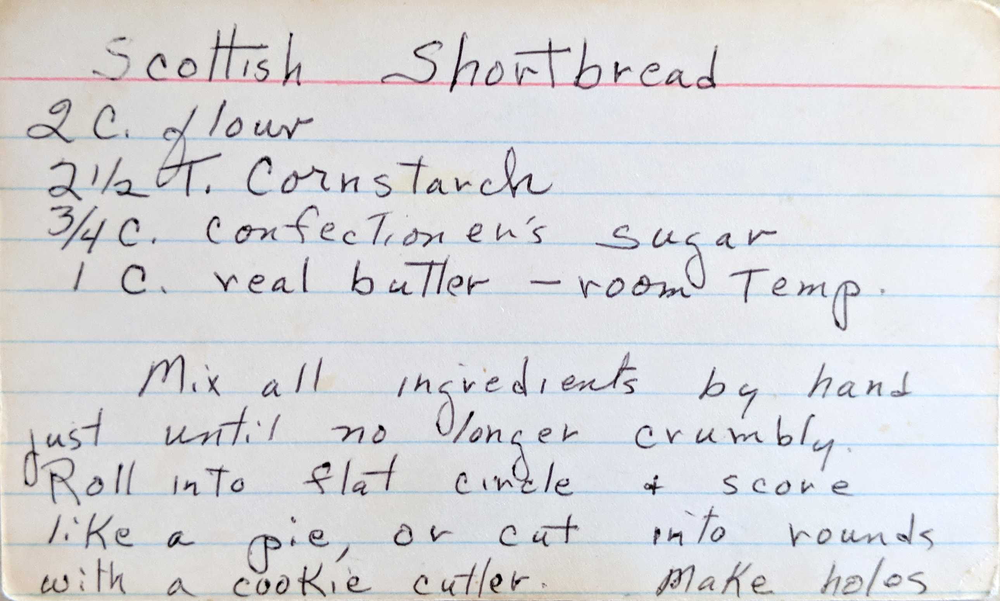
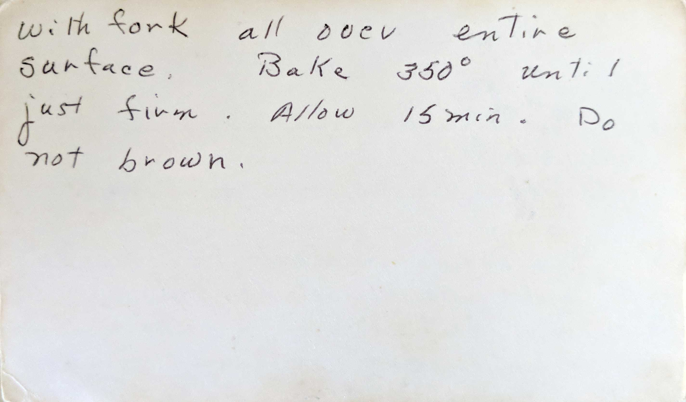

Scottish Shortbread
2 C. flour
2 1/2 T. cornstarch
3/4 C. confectioner's sugar
1 c. real butter - room temp.
Mix all ingredients by hand just until no longer crumbly. Roll into flat circle + score like a pie,
or cut into rounds with a cookie cutter. Make holes

with fork all over entire surface. Bake 350° until just firm. Allow 15 min. Do not brown.